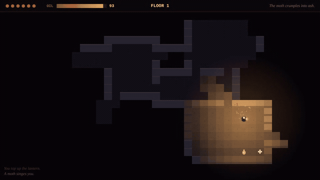
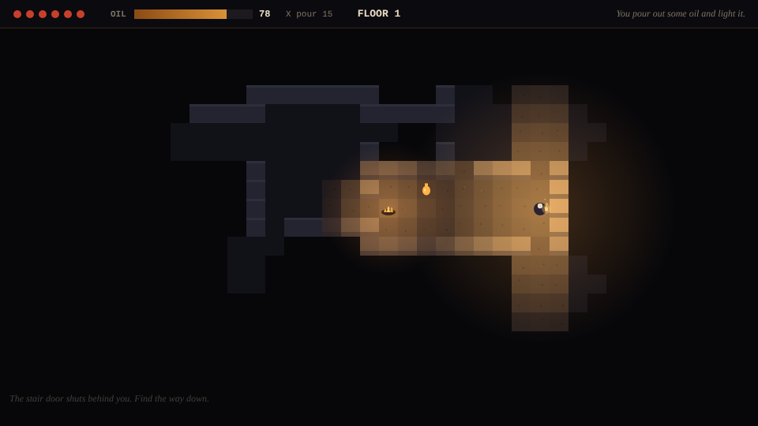

wick
The oil is the light. The light is the map.
A turn-based roguelike on procedurally generated floors. You need the stairs, and you only see what your lantern lights; oil burns as you walk, and the light shrinks with it. Moths fly at the light, shades flee its bright core and wait at the edge for it to go out, and hounds ignore it and hunt by sound, which travels along corridors, not through rock. Plain JavaScript on a 2D canvas, no engine and no asset files; the rules are a pure module with no DOM.
Play it in the browser on itch.io or on GitHub Pages, or run it locally and verify the task pack:
npm start · npm test · npm run tasks
Walkthrough



Task pack
Three tasks in the shape used to evaluate AI agents on game development. Each has a brief written as it would arrive, acceptance criteria (input sequence, expected visual outcome, verifiable game state), a reference solution with root-cause notes, and an automated check against the real rules. A verifier proves every check fails on the starting state and passes on the solution, with the whole unit suite green.
Hounds hear through walls
Bug · player report
Hearing was switched to straight-line distance "to save a pathfind", so hounds wake behind solid rock. Sound is supposed to travel along corridors.
Enemies follow you downstairs
Bug · QA ticket
The new floor appends its enemies instead of replacing the old ones; survivors arrive at their old coordinates, some inside walls.
Pour oil
Feature · design spec
Spend 15 oil to leave a burning pool: a second light source for vision, shade fear and moth attraction, plus rendering, input and audio.
Verified proof
18 unit tests: connectivity over 1,800 generated floors, stairs placement, FOV shape and wall blocking, flee maps, each enemy's behaviour and the turn rules. All three task checks fail on their starting state and pass on their solution with the suite green. A headless browser smoke test plays several floors, tap input, death and restart with no console errors.
How it is built
Rooms by rejection sampling joined left to right with L-shaped corridors (connected by construction), plus extra corridors for loops; stairs on the farthest tile by walking distance. Recursive shadowcasting for field of view; BFS distance maps for the AI, with a Brogue-style flee map for shades. Every random choice goes through a seeded PRNG.
Honest limits
Four-directional movement, no saves. Tested in Chromium; Firefox and Safari use only standard canvas and WebAudio APIs but haven't been verified. Built without an engine.